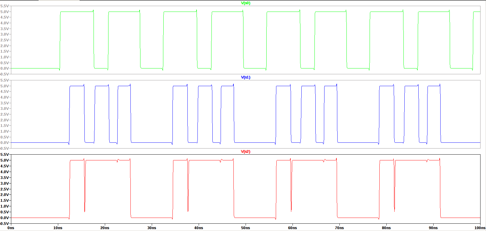
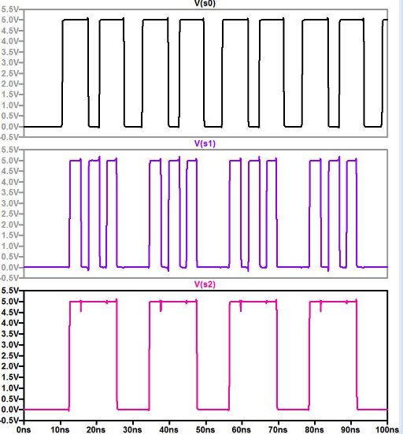
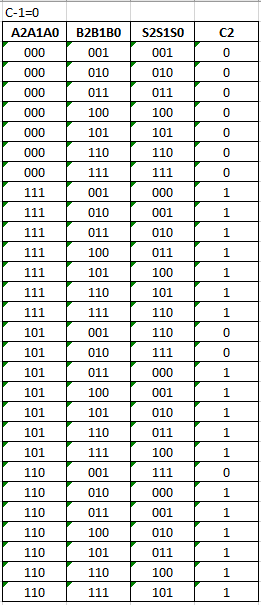
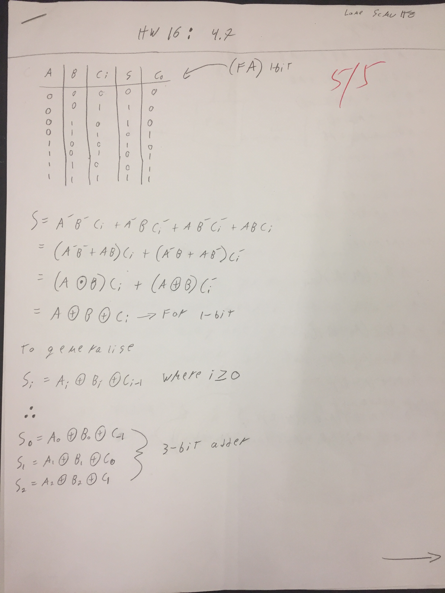
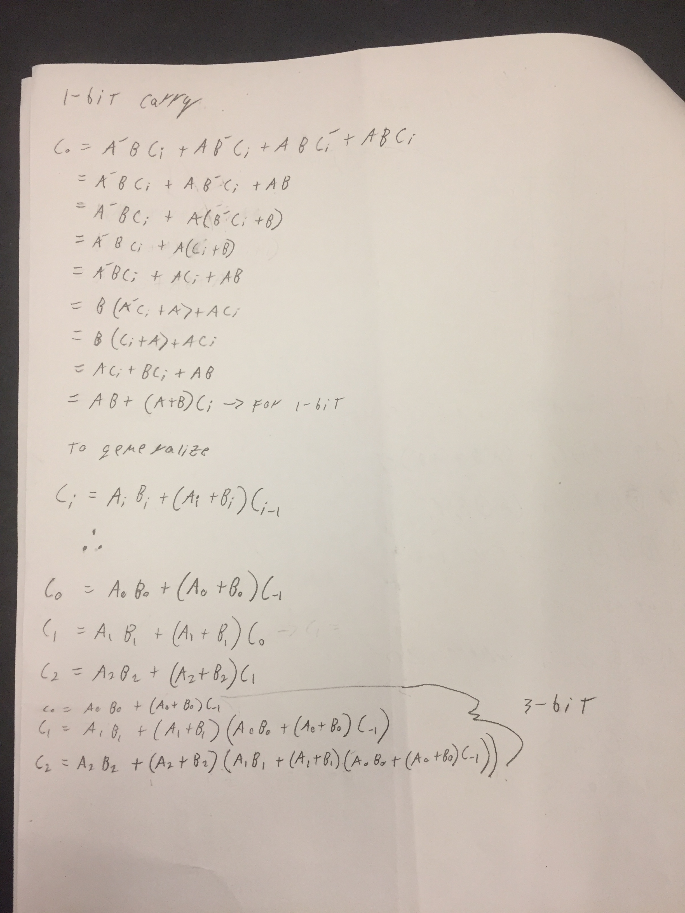
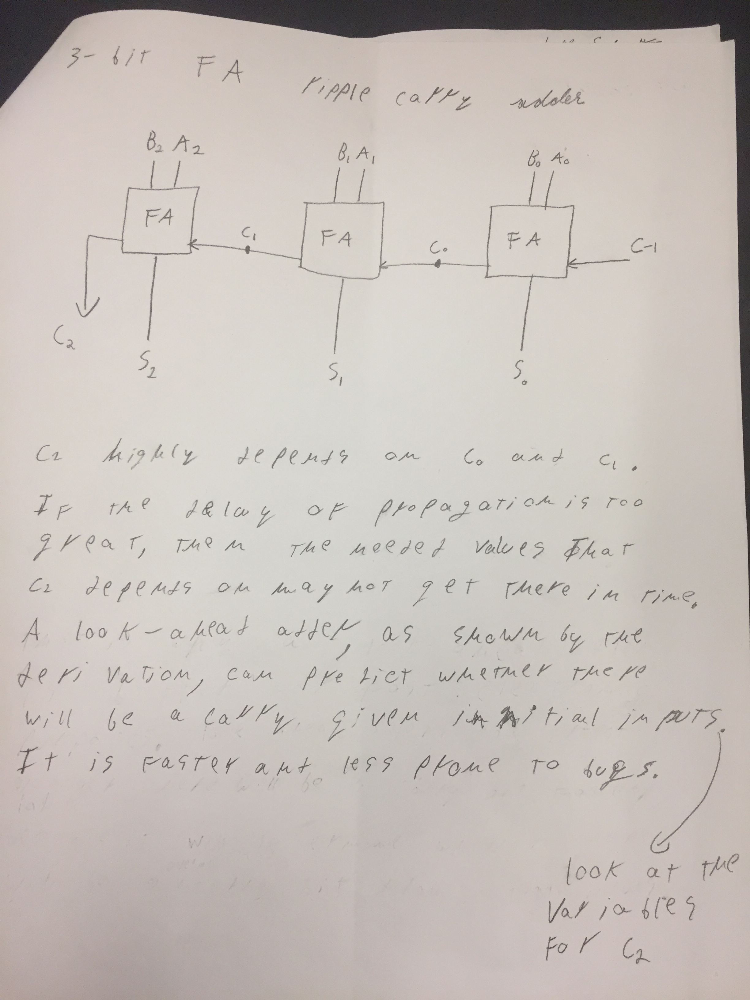

Figure 1: A schematic for a 3-bit ripple-carry full adder (left) and a
3-bit carry-look ahead adder (right) is shown above with carry and sum
time responces.
As seen in Figure 1, the carry from c2
has been prepared for a while before the sum takes place on the look
ahead adder. This is not the case for the ripple carry adder. A glitch
for the built schematic can be
seen in the output on S2. The sudden downward spike on the square waves
is the glitch. Unfortunately, slowing down the square wave by 10 times
does not significantly aid the response of the circuit. There is a
similar glitch present.

Figure 2: An example glitch for the ripple-carry adder is shown above.
The downwards spike that a ripple-carry
adder experiences is less in a look-ahead adder. The look-ahead adder
can predict whether a carry will be generated or not given the
innitial inputs. This makes enables the circuit to operate faster. The
slight drop
in voltage experienced by the look-ahead adder is above the switching
point; therefore, logic should not be effected.

Figure 3: Sample logic from a look-ahead adder is shown above.
Source
The electric circuit for a look-ahead
adder was built. The truth table for the adder was mostly completed.
Power to one of the OR chips on the board did notfunction properly. The
incorrect value was at A2A1A0 = 101 and S2S1S0 = 101. Below is the
truth table acquired in lab with the incorrect value changed to what it
should be.
Table 1: The truth table for a 3-bit carry-look ahead adder.

Derivation of logic below:


